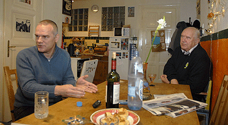
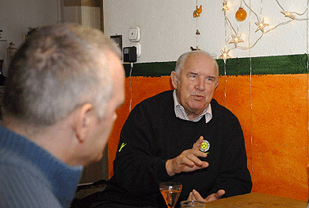

|
Tudva, hogy az idõsebb Palotai focibíró volt, a partyzók már
nem is csodálkoznak azon, ha dj Palotai arca sokszor azt jelzi, hogy
öcsi, mindjárt kapsz egy sárgát.
PZS: Szerencsére nálunk nincsen sárga lap. De nem
is az a dolgom, hogy fegyelmezzem a fiatalokat, csak szórakoztatni. Bár
látok aggasztó tüneteket.
Például?
PZS: Ma már a fiatalok korosztályok szerint
hallgatnak zenét. Tizenháromtól tizenhét éves korukig a kõkemény zenék
a menõk, tizennyolc fölött a liquid, a folyósabb, könnyedebb, agyasabb
drum'n'bass. Húsz körül jön a break, huszonötnél meg a
hiphop vagy a house, és ezek között nincs keveredés. Mondtam
is apámnak, hogy ma már tíz évig tart a gyerekkor, onnan már kamaszok a
kölykök. Ma már nem fiatalok és öregek között húzódik a generációs
szakadék, hanem a tizen- és huszonévesek között.

Lehet kísérletezni a mûfajok keverésével?
PZS: Ahogy én látom, a legritkább esetben. Ha
például raggabulin raksz föl hiphopot, anyáznak. Sokszor egymáshoz
közel álló mûfajokat sem tûrnek meg egymás mellett. Kiválasztanak egy
vékony részt az egészbõl, aztán azon pörögnek, míg meg nem unják. Aztán
jön a következõ keskeny mezsgye, de akkor már a korábbi nem is kell.
Brazíliában tízperces dobfutamokat vernek a szurkolók, és õk
is meg a játékosok is nagyon jól tudják, melyik ritmus melyik csapathoz
tartozik.
PZS: Jamaicában minden új riddimhez új tánc is tartozik. Ehhez képest az itthoni partyzó fiatalok minden zenére ugyanúgy mozognak.
PK: Elõször '64-ben volt ilyen élményem, amikor a
késõbbi olimpiai bajnok csapattal Afrikában jártunk felkészülési
tornán. Ott is dobbal, hangszerekkel, énekekkel kísérték végig a
meccseket.
PZS: Az utolsó Indiában volt, a Nehru-kupán. Ez
volt az utolsó fellépése bíróként. Hatvanezer ember volt a stadionban,
de a gólnál nem nagyon történt semmi. Ám ha valami agresszív történés
volt a pályán, hatvanezren üvöltöttek félelmetesen. De hasonló volt a
Muzsikás Együttes nyolcvanas évekbeli afganisztáni fellépése...
Afganisztáni?!
PZS: Igen, még '89 elõtt. A közönség akkor kezdett el tombolni, amikor a zenébõl egyáltalán nem következett volna.
PK: '64-ben a tokiói olimpia idején még a
japánoknak sem volt sok fogalmuk a fociról. Ha valaki magasra rúgta,
vagy a kapus átrúgta pályán a labdát, akkor örültek, a gólnál
egyáltalán nem.

Országok, közönségek, focisták - egy játékvezetõ sokmindent megtudhat a népek mentalitásáról.
PZS: Ami nekem megmaradt, hogy a
Barcelona-szurkolók például azért szerették apámat, mert amikor a
Realnak vezetett, a madridiak mindig kikaptak, vagy kiestek.
PK: A görögök sokszor megkörnyékeztek ékszerrel,
órával, minden mással, noha tudták, hogy nincs esélyük. Egy
Olympiakosz-Anderlecht kupavisszavágót vezettem, úgy, hogy a belgák
5-1-re nyerték a hazai meccsüket. A görögök három-nullra vezettek a
végén, miután egy görögöt jogosan kiállítottam. Tehát egy gól kellett
volna továbbjutáshoz, de ez már nem jött össze. A meccs után
elindultunk a stadionból kocsival. A szurkolók az autópályáról is
megpróbáltak leszorítani, rendes autós üldözést éltünk át a
kollégáimmal. A repülõtéren meg belga frankot kerestek nálunk a
vámosok, mintha lefizettek volna a belgák. Ezek után csodálkoznak, ha
azt mondom, hogy Athén a kedvenc városom.
Peter Poppara, Zubor Tamás
[origo]
|